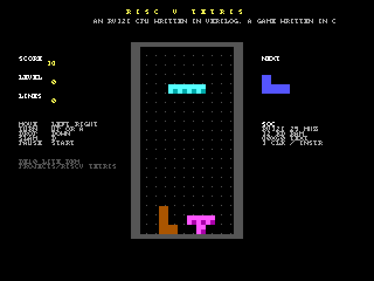

Projects
Whole designs, not single capabilities: each one was built by the AI from the BKM's examples and skills, reviewed,
tested in simulation and on the board, and documented the same way: an overview with the block diagram and the flow,
an architecture spec, a user guide, and the full Quartus project as a .qar. No bitstreams in the repo: one
build (a few minutes) makes the .sof.

FFT Lab
A wave generator, a scope and two 256-point FFTs on the same samples: our own radix-2 RTL (6,145 clocks) beside Altera's FFT II IP (1,637). Every pixel matched a bit-exact Python model. 7,183 LEs.
runs on the board while the PC stays connected (evaluation IP); controls and sound to be checked by a person
RISC-V Tetris
A RISC-V CPU in Verilog, 32 KB RAM, an 80x60 text screen; a Python assembler, C compiler and simulator; Tetris in C on it. The RTL matched the simulator over 294,803 steps.
runs on the board; joystick and sound to be checked by a person
Pac-Man
The arcade game: the real maze, four ghosts with the arcade AI, power pellets, levels, lives, the intro tune. 9,504 LEs.
runs on the board; joystick and sound to be checked by a personWhat every project folder holds
| File | What it is |
|---|---|
index.html | the overview: what it does, what you will see, the block diagram, how it flows, how it was tested, the review log, status, files |
spec.html | the architecture spec: requirements, modules and ports, clock domains, memories, state encodings, budgets, design decisions |
guide.html | the user guide: build, load, use, test over USB, flash, simulate, change, troubleshoot |
<name>.qar | the whole Quartus project, archived by Quartus itself |
src/, sim/, assets/, media/ | the sources, the testbench, generated data and generators, the pictures |
The standard is the make-project skill, with a template in projects/_template/; a test checks that every
project has these files and that this page links it. For single capabilities (a PLL, a ROM, the SDRAM...) see the
examples.